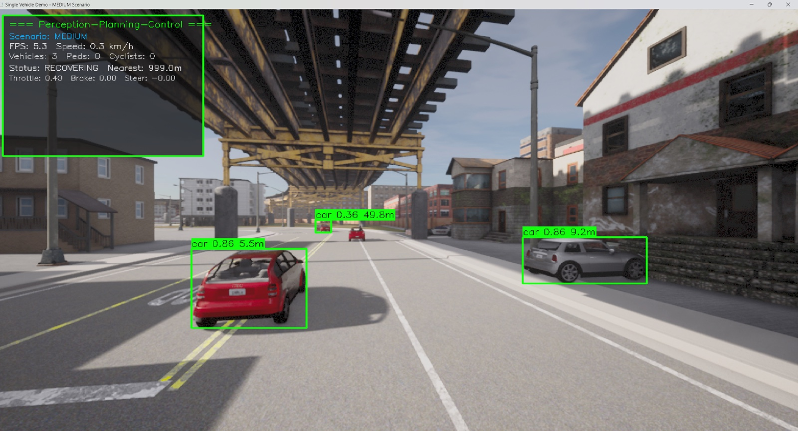
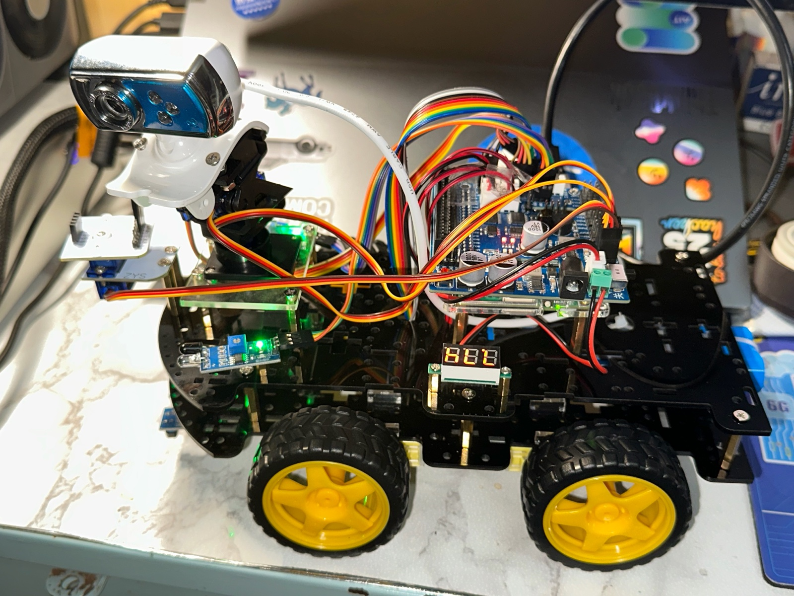
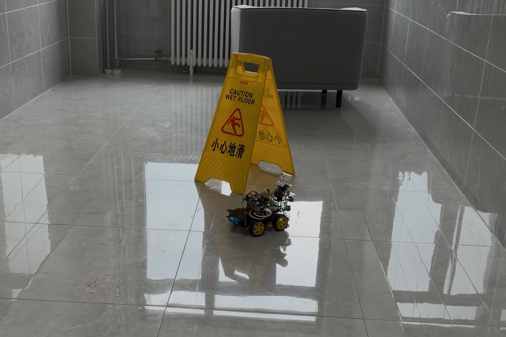
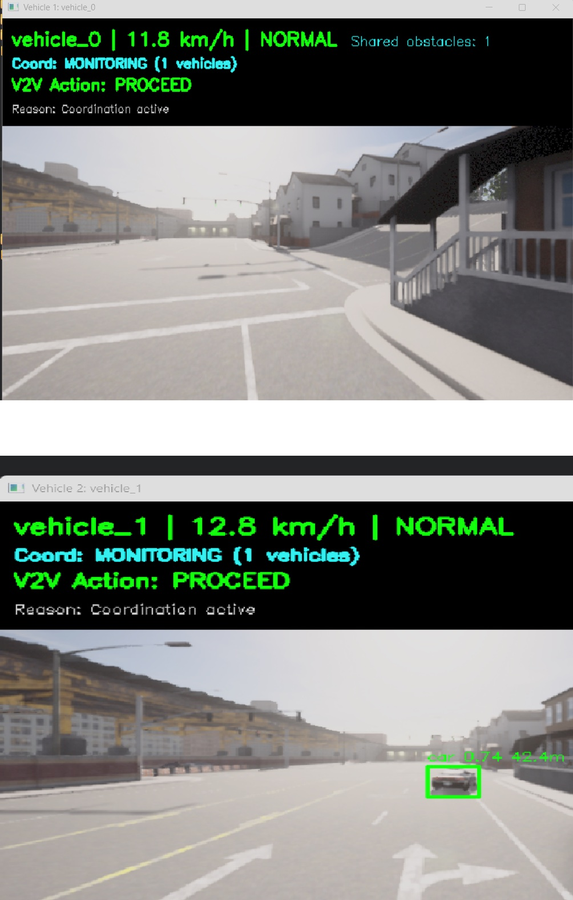
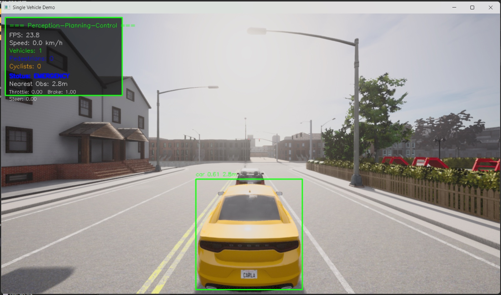

Lightweight vision
YOLO11n detection and IoU tracking identify vehicles, pedestrians and cyclists. The detector supports PyTorch, ONNX Runtime and OpenVINO backends.
perception/Cooperative autonomous driving
An open-source driving stack that connects vision, motion planning and vehicle-to-vehicle communication. Built for CARLA and Raspberry Pi 5.
Python / CARLA 0.9.13 / Raspberry Pi 5
The idea
A vehicle can only react to what it knows. NexusPilot combines local camera detections with information from nearby vehicles, then uses that shared view to plan movement and negotiate intersection conflicts.
The same modular stack spans simulated roads and a physical 4WD platform, making perception, planning and cooperation easier to study together.
Blind intersection / problem scenario
Each car sees a road. Neither sees the other.
Showcase
Recorded trials connect the design to the physical system, from a CARLA scene to a Raspberry Pi 5 four-wheel drive platform.





Architecture
Independent modules connect sensing to action. A cooperation layer feeds shared observations and driving intent back into planning.
YOLO11n detection and IoU tracking identify vehicles, pedestrians and cyclists. The detector supports PyTorch, ONNX Runtime and OpenVINO backends.
perception/Rotational fields complement attractive and repulsive forces. Stuck detection, recovery logic and steering smoothing help the planner handle difficult obstacle layouts.
planning/Nearby vehicles exchange observations and intent. Distance-aware coordination and time-to-intersection estimates guide yielding, slowing and proceeding.
cooperation/CARLA provides repeatable scenarios. Raspberry Pi 5 connects the stack to camera input, ultrasonic sensing and motor control on a physical 4WD car.
rpi_deploy/Evaluation
Results reported in the final project report, across CARLA simulation and Raspberry Pi 5 trials.
| Metric | CARLA | Raspberry Pi 5 |
|---|---|---|
| Obstacle avoidance success rate | 90.4%250 trials | 75.0%20 trials |
| Pipeline throughput | 19.3 FPS | 12.7 FPS |
| Blind-intersection collision reduction with V2V | 85.7% | Not reported |
| Local-minimum escape success | 85.7% | Not reported |
These figures summarize the controlled experiments described in the final report. They are research results and do not represent a general road-safety guarantee.
Get started
Start in simulation, explore individual modules, or follow the hardware guide for a Raspberry Pi deployment.
Read the setup guidegit clone https://github.com/JewelRoam/NexusPilot.git
cd NexusPilot
python -m venv .carla_env
source .carla_env/bin/activate
pip install -r requirements.txt
python simulation/multi_vehicle_demo.pyLinux/macOS shell. Start the CARLA 0.9.13 server first; Python 3.8 is recommended by the repository for CARLA compatibility. Windows activation steps are in the setup guide.
Read the implementation, reproduce the scenarios, or contribute an improvement.